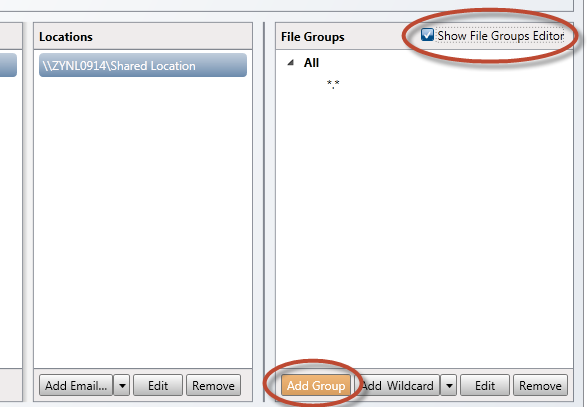
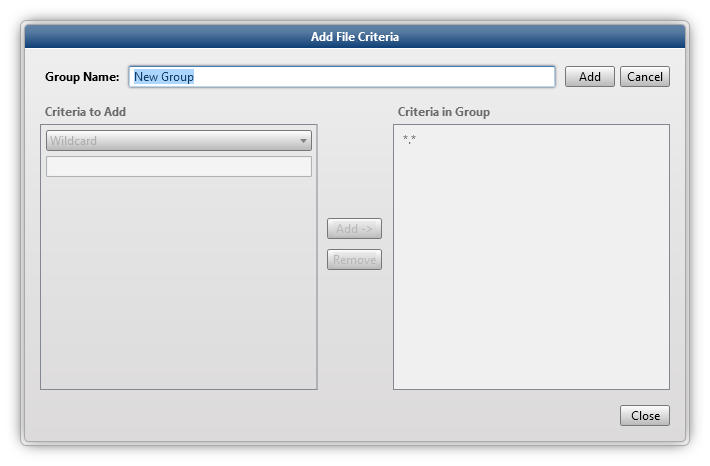

You can search for a matter via the tabs on the left side of the screen:

- All
All created matters will be shown. - Active
Active matters are all opened and being worked on. - Inactive
Inactive matters are all closed. Nobody is working on them. - Checked-out
Checked-out matters can be open (active) or closed (inactive), but only the person who has checked a matter out can open it. - Checked-out by me
Checked-out by my matters are matters from the logged-in user. They can be open (active) or closed (inactive). Only the logged-in user can open and work on them.
or
In the Collection tab, select the checkbox Show File Groups Editor. If you define File Groups via this option, you can link them directly to locations: Select a Location and click Add Group (continue with step 5 below).

The Add File Criteria dialog appears.

- Wildcard
Define a file type (for example, *.xxx) and click Add. It will be added to the Group. Repeat to add more file types. - MIME Type
Search and select a MIME Type from the list. Click Add. It will be added to the Group. Repeat to add more MIME Types.